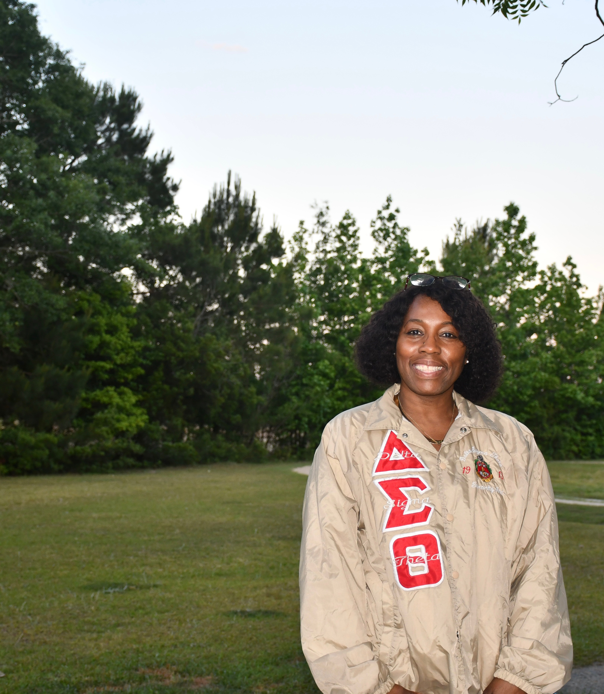
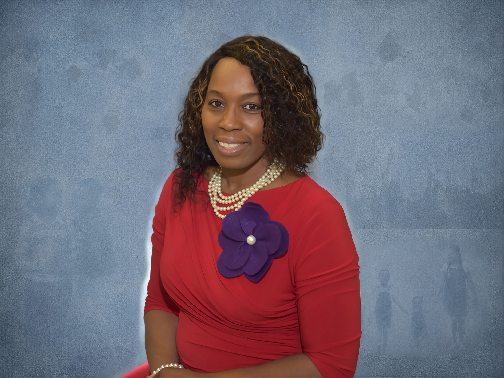

Scholarships
Investing in students preparing to serve others through behavioral health and continuing education.

The Cathy Lance Timmons Foundation empowers individuals, strengthens communities, and expands continuing education opportunities through awareness, support, scholarships, partnerships, and meaningful resources.
Learn More
Investing in students preparing to serve others through behavioral health and continuing education.
Meeting people where they are through partnerships, outreach, and programs built on dignity.
Supporting mental health, fairness, and the belief that every person deserves a real chance to grow.

About the Foundation
Cathy Lance Timmons lived her values through patience, professionalism, and an unwavering belief that every person deserved to be treated with dignity and respect. The foundation carries that example forward through scholarships, community programs, and meaningful partnerships.
Our StoryOur Impact
Our work is guided by Cathy's belief that compassion is a practice and hope is a responsibility. We invest in future behavioral health professionals while serving communities with care today.
Programs
The Cathy Lance Timmons Scholarship and the 311 Scholarship support students building careers in behavioral health and service.
Programs such as the CLTimmons Community Store turn giving into practical support for families and neighbors in the community.
Ask About the StoreWe work with schools, families, organizations, and volunteers because lasting change is built by many hands.
News
Application guidance and award announcements will be shared here as new cycles open.
Stories from organizations and volunteers helping expand the foundation mission.
Upcoming gatherings, outreach opportunities, and ways to support the work.
Your support helps expand scholarships, resources, and meaningful opportunities for continuing education.
Donate